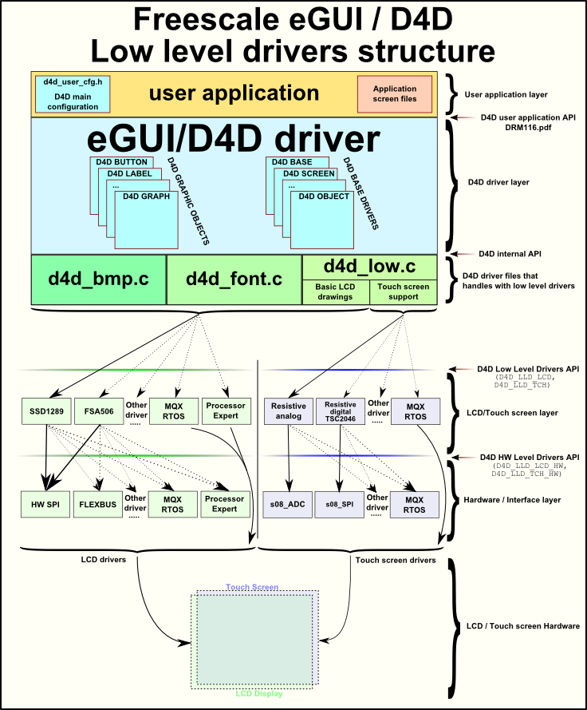
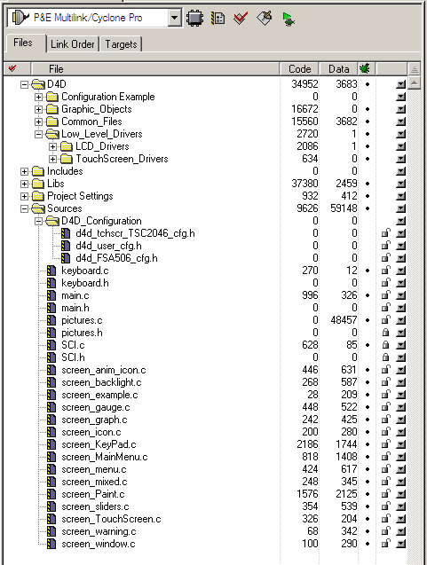
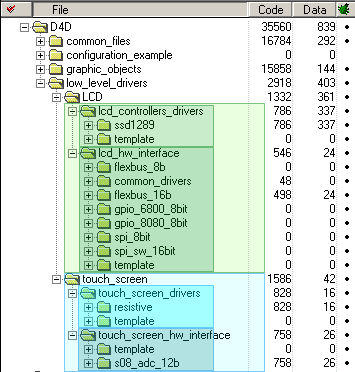
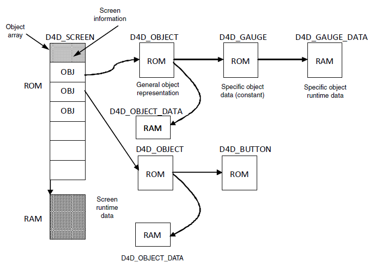
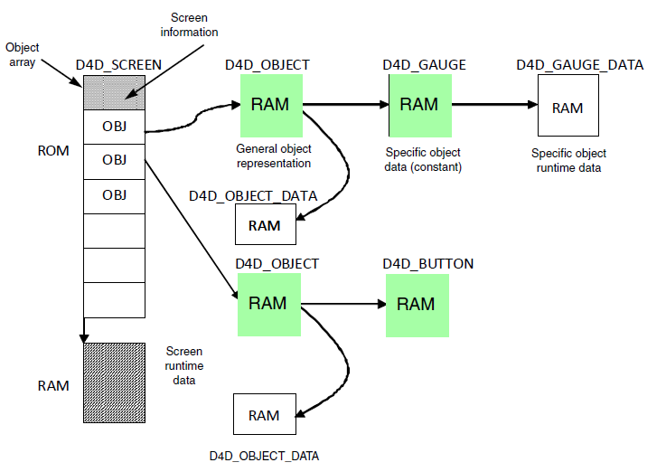
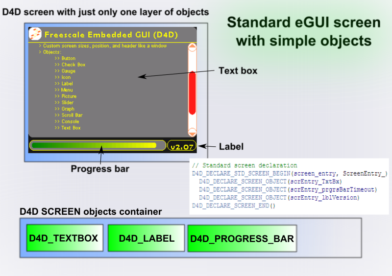
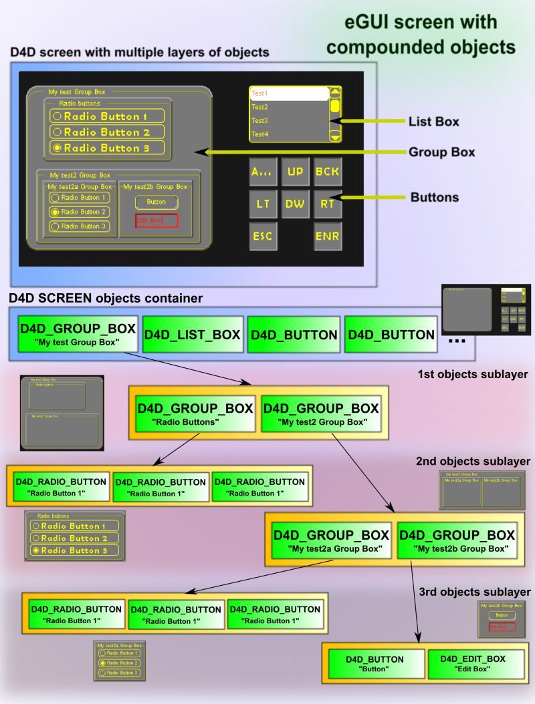

Features:
A solution for the LCD is needed in cases of control, measure, and diagnostics of some systems or devices with human-machine interface, where the operator can actively change conditions and requirements. The eGUI/D4D is capable of generating the user menu, graphics, pictures, text, and display them on the LCD module. It allows interacting with all objects, dynamically changing, adding, or removing them. It also can read and write their status or current value. The D4D also fully supports touch screen capabilities of the LCD displays.
- Supports graphical color LCD displays of various sizes
- Small RAM (volatile) memory footprint
- Multiple platform support
- Object style of driver
- Smart support-screen-oriented structure of the user code
- Custom screen sizes, position, and a header like window
- Compounded objects (objects can be owner of child objects)
- Graphical widgets
- Touch screen support
- Multiple font support
- External font support
- UNICODE support
- Buffer for input keys
- Various types of color systems
- Transparent color support
Structure of Project with eGUI/D4D
Figure shows the position of the D4D in the whole project. It is placed between low-level drivers of the LCD and the user application.

Figure 1: eGUI/D4D block diagram
File Structure
In Figure you can find the file structure of eGUI/D4D, it is created from five types of files:
- LCD low-level driver
- LCD D4D high-level driver
- LCD D4D user configuration
- User application files
- User application D4D dependent file (screen files)

Figure 2: eGUI/D4D file structure in CodeWarrior project
Low-Level Drivers
The low-level driver groups contain the hardware-dependent low-level drivers for the LCD/TFT displays and touch screens. This group is divided into two sub-groups. These groups are also divided into another two groups that separate controller drivers and hardware interface drivers. The lower level driver file structures are shown in Figure 3. This organization of low level drivers allow various combinations of LCD and Touch screen drivers and hardware interfaces as shown in Figure 1

Figure 3: eGUI/D4D low level driver file structures
LCD Drivers
The LCD driver directory contains both layers designated for the LCD control.
LCD Controller Drivers
This group contains all supported LCD drivers.
LCD Hardware Interface Drivers
This group contains all supported LCD driver hardware interfaces for the LCD controllers mentioned above.
- d4dlcdhw_flexbus_16b.h / d4dlcdhw_flexbus_16b.c
- Provides functions and prototypes to communicate with the LCD controller through a 16-bit width 6800 parallel bus interface over flexbus.
- d4dlcdhw_flexbus_8b.h / d4dlcdhw_flexbus_8b.c
- Provides functions and prototypes to communicate with the LCD controller through an 8-bit width 6800 parallel bus interface over flexbus.
- d4dlcdhw_gpio6800_8b.h / d4dlcdhw_gpio6800_8b.c
- Provides functions and prototypes to communicate with the LCD controller through an 8-bit width 6800 parallel bus interface over GPIO.
- d4dlcdhw_gpio8080_8b.h / d4dlcdhw_gpio8080_8b.c
- Provides functions and prototypes to communicate with the LCD controller through an 8-bit width 8080 parallel bus interface over GPIO.
- d4dlcdhw_gpio8080_byte_8b.h / d4dlcdhw_gpio8080_byte_8b.c
- Provides functions and prototypes to communicate with the LCD controller through an 8-bit width 8080 parallel bus interface over GPIO. This is a special derivative from a gpio8080 driver that sends only bytes instead of words. This access is needed for an FSA506 LCD controller.
- d4dlcdhw_s12_spi_16b.h / d4dlcdhw_s12_spi_16b.c
- Provides functions and prototypes to communicate with the LCD controller through a 16-bit serial bus interface over an SPI. This driver is a derivative from the S12 MCU family.
- d4dlcdhw_spi_8b.h / d4dlcdhw_spi_8b.c
- Provides functions and prototypes to communicate with the LCD controller through an 8-bit serial bus interface over SPI. This driver is a derivative from the S08 MCU family.
- d4dlcdhw_spi_swc_8b.h / d4dlcdhw_spi_swc_8b.c
- Provides functions and prototypes to communicate with software controlled LCD controller by 8-bit serial bus interface over SPI. This driver is derivative for S08 MCU family.
- d4dlcdhw_spi_sw_16b.h / d4dlcdhw_spi_sw_16b.c
- Provides functions and prototypes to communicate with the LCD controller through a 16-bit serial bus SPI interface over GPIO.
- d4dlcdhw_kinetis_spi.h / d4dlcdhw_kinetis_spi.c
- Provides functions and prototypes to communicate with the LCD controller through a 16-bit serial bus SPI interface on Kinetis device.
- d4dlcdhw_mqx_spi.h / d4dlcdhw_mqx_spi.c
- Provides functions and prototypes to communicate with the LCD controller through a 16-bit serial bus SPI interface through MQX IO drivers.
- d4dlcdhw_mqx_flexbus.h / d4dlcdhw_mqx_flexbus.c
- Provides functions and prototypes to communicate with the LCD controller through a 16-bit parallel FlexBus bus through MQX IO drivers.
- d4dlcd_template.h / d4dlcd_template.c
- Template of the LCD low level hardware interface driver that must be used to create a new low level hardware interface driver.
- d4dlcdhw_dragonfire_lcdc.h / d4dlcdhw_dragonfire_lcdc.c
- Provides functions and prototypes to operate with the MCF52277 LCDC peripheral.
- d4dlcdhw_mqx_mpc5125_diu.h / d4dlcdhw_mqx_mpc5125_diu.c
- Provides functions and prototypes to operate with the MPC5125 DIU peripheral on the MQX (3.6 version or higher).
- d4dlcdhw_k70_lcdc.h / d4dlcdhw_k70_lcdc.c
- Provides functions and prototypes to operate with the kinetis K70 LCDC peripheral (support native 24- bit color depth).
- d4dlcd_template_fb.h / d4dlcd_template_fb.c
- LCD template of the low level hardware interface driver for the frame buffer that must be used to create a new frame buffer low level hardware interface driver.
Touch Screen Drivers
The LCD drivers directory contain both layers designated for the touch screen control.
Touch Screen Drivers
Touch Screen Hardware Interface Drivers
This group contains all supported touch screen driver hardware interfaces for the touch screen hardware mentioned above.
- d4dtchhw_s08_adc.h / d4dtchhw_s08_adc.c
- Provides a function to run a resistive method of reading the touch screen using a GPIO and ADC peripheral.
- d4dtchhw_s12_adc.h / d4dtchhw_s12_adc.c
- Provides a function to run the resistive method of reading the touch screen using a GPIO and ADC peripherial.This driver is derivative for S12 MCU family.
- d4dtchhw_mcf52259_adc.h / d4dtchhw_mcf52259_adc.c
- Provides a function to run the resistive method of reading the touch screen using the GPIO and ADC peripherial.This driver is derivative for MCF52259 MCU.
- d4dtchhw_kinetis_adc_12b.h / d4dtchhw_kinetis_adc_12b.c
- Provides a function to run the resistive method of reading the touch screen using the GPIO and ADC peripheral on Kinetis device.
- d4dtchhw_template.h / d4dtchhw_template.c
- Template of the touch screen low level hardware interface driver that must be used to create a new low level hardware interface driver.
eGUI/D4D User Configuration File
This file is used to modify all default values and settings of the D4D. Here the behavior of the driver and its objects can be modified. The default visual aspect of the individual objects can also be modified. d4d_user_cfg.h.Example
- This file is used to change default settings of the driver and all objects
- File has to be created in the user source code directory. The template of this file is placed in the driver folder, sub folder "Configuration Example."
NOTE All these files are needed to run the eGUI/D4D correctly in your project, including d4d_user_cfg.h. If you do not use some functions you do not need to care about them, they will not be linked into your application and will not consume any memory or any other resources.
User Application Files
User application files are dependent on the target application, there are a few recommendations on how to use this driver and how to design source code for individual screens. Recommendation:
- On start the user code void D4D_Init(D4D_SCREEN* pInitScreen) has to be called.
- In the main never-ending loop void D4D_Poll(void) has to be periodically called.
- When the keys were changed (for example in the keyboard interrupt) void D4D_NewKeyEvent(D4D_KEY_SCANCODE scanCode) has to be called with the new state of keys.
- In case the touch screen is used (for example in an interrupt routine from the timer peripheral) void D4D_CheckTouchScreen(void) has to be called periodically to check the state of the touch screen.
- In case the time events are used (for example in an interrupt routine from the timer peripheral) void D4D_TimeTickPut(void) has to be called periodically, to provide "time tick" information into the driver.
User Application eGUI/D4D Dependent Files
- screen_xxxxxx.c
- These files must contain all the code for individual screens as functions and data. Create a new file for each screen, for better lucidity of the source code.
eGUI/D4D Data Memory Use
The driver consumes some flash memory for its code and static data structures. Here is an explanation of the memory usage for screens and objects. Each screen contains its own configuration information, its runtime data, and a list of all the objects that are present on it. Each object is put together from a general object representation, object specific data, and some objects also have run-time object data.

Figure 4: Memory map for screens and objects
NOTE
All objects contain instantiation macros that create gripped objects mostly in ROM memory and only runtime data in the RAM (see Figure 4). All of these macros have others with same name and postfix _INRAM. The macros with _INRAM postfix creates complete graphic objects in RAM memory and thus all parameters can change runtime, but the screen must be redrawn manually after each change.

Figure 5: Memory map for screens and objects created in RAM memory by _INRAM postfix instantion macros
eGUI/D4D Compounded objects
The eGUI since 3.00 version brings new functionality "compounded objects" that allow all objects be owner of any other objects ("children"). This functionality allows with eGUI create professional applications with better graphical layout on the screen. The nice example of compounded object is D4D_GROUP_BOX, this object is completely using a new advantages of this new functionality. It is typical container type of object that just only draw the background, bevels and title, and the main thing what is does is containing other "children" objects. The difference between standard eGUI "single" objects and the new compounded objects is shown on following figures. On the first figure(Figure 6 Standard eGUI objects on screen) that shows the standard eGUI objects on screen is shown that all objects are on same layer and could be created just only simple screens without any advanced arrangement of objects.

Figure 6: Standard eGUI objects on screen
The second figure(Figure 7 The compounded objects on screen) shows the screen that contains compounded objects, that shows typical multi layer objects structure that allows create an advanced argument of objects on screen.

Figure 7: The compounded objects on screen
Code example:
rb_testRela, D4D_RADIOBUTTON_F_DEFAULT, NULL, NULL, NULL, FONT_ARIAL7, NULL, NULL, NULL)
rb_testRela, D4D_RADIOBUTTON_F_DEFAULT, NULL, NULL, NULL, FONT_ARIAL7, NULL, NULL, NULL)
NULL, NULL)
_D4D_DECLARE_BUTTON(D4D_CONST, btn_test, "Button", 20, 5, 60, 20, 5, NULL, lbl_testRel,
FONT_ARIAL7, 30, NULL, NULL, NULL)
&groupBox_marginDefault, "My test2b Group Box", FONT_ARIAL7, D4D_GROUP_BOX_F_DEFAULT, NULL,
NULL, NULL)
&groupBox_marginDefault, "My test2 Group Box", FONT_ARIAL7, D4D_GROUP_BOX_F_DEFAULT, NULL,
NULL, NULL)
rb_testRel, D4D_RADIOBUTTON_F_DEFAULT, NULL, NULL, NULL, FONT_BERLIN_SANS_FBDEMI12, NULL, NULL,
NULL)
rb_testRel, D4D_RADIOBUTTON_F_DEFAULT, NULL, NULL, NULL, FONT_BERLIN_SANS_FBDEMI12, NULL, NULL,
NULL)
rb_testRel, D4D_RADIOBUTTON_F_DEFAULT, NULL, NULL, NULL, FONT_BERLIN_SANS_FBDEMI12, NULL, NULL,
NULL)
&groupBox_marginDefault, "Radio buttons", FONT_ARIAL7, D4D_GROUP_BOX_F_DEFAULT, NULL, NULL,
NULL)
"My test Group Box", FONT_ARIAL7, D4D_GROUP_BOX_F_DEFAULT, NULL, NULL, NULL)
 1.8.5
1.8.5